"Time Traveler" Museum
An interactive and immersive museum experience allowing users to dive deep into the history and evolution of the artifact.
2021, Associated with: TC Game Research Lab, Team with: Jenny Wu, Ivy Wu, Zhang Qi, Zoe Ye
Problem / Rationale
In a classic VR museum experience, people are only are able to navigate through listed static information in a less interactable way. This restricts the potential of VR as a powerful immersive media. Inspired by the documentaries in between Age of Empire 4 campaigns, we wonder if we can build some more interactive experiences that allow players to immerse themselves back to the age the museum artifact was originated, crafted, and evolved.
Documentary Cutscenes between Campaigns - Castle
Documentary Cutscenes between Campaigns - Crossbow
Ideation
With a review in existing products and theories, we plan to launch this project by user research, trying to understand what's the exciting and frustrating parts for possible target audience.
Research shows motivation is key factor. An inviting and playful interactive experience can enhance the motivation of the learner, specially K-12 children who are in our audience range. Imagine when you are about to learn the history of the artifact displayed in the museum, such as a temple lasting for 1000 years, the great sword used by Alexanda the Great, or the first firearm invented accidentally by ancient Chinese alchemists, besides reading the history and stories from a plain 2D UIs, you can also warp into the age where the artifact was born, play a role in first-person, view it, craft it, use it, navigate inside, participate the story forging its glory...
Some sample designs can be best presented like:
- Artifact: xxxx Temple
- Story: How was the xxxx temple built. Story begins with the religious rituals...extend the story to its cultural influence...Legacy...
- Role-Play and Game Design: A missionary. Along with learning the history through an audiobook and UIs, there are some game events such as ringing the bell, spreading beliefs...
- Artifact: Gunpowder
- Story: How was first gunpowder invented in Ancient China. Story begins with the Emperor's dream to live forever...He hired Taoists (sometimes also known as early age Chinese alchemists) to synthesize and test substances that extend human life...Explosion...Surprising founding...Make fireworks...
- Role-Play and Game Design: A taoist (alchemist). Along with learning the history through an audiobook and UIs, there are some game events such as boiling with the pot, synthesizing powder, launching fireworks...
In general, we aim to create a playable, relaxing, fun, vivid, story-telling, immsersive and interactive museum artifact learning experience.
Research shows motivation is key factor. An inviting and playful interactive experience can enhance the motivation of the learner, specially K-12 children who are in our audience range. Imagine when you are about to learn the history of the artifact displayed in the museum, such as a temple lasting for 1000 years, the great sword used by Alexanda the Great, or the first firearm invented accidentally by ancient Chinese alchemists, besides reading the history and stories from a plain 2D UIs, you can also warp into the age where the artifact was born, play a role in first-person, view it, craft it, use it, navigate inside, participate the story forging its glory...
Some sample designs can be best presented like:
- Artifact: xxxx Temple
- Story: How was the xxxx temple built. Story begins with the religious rituals...extend the story to its cultural influence...Legacy...
- Role-Play and Game Design: A missionary. Along with learning the history through an audiobook and UIs, there are some game events such as ringing the bell, spreading beliefs...
- Artifact: Gunpowder
- Story: How was first gunpowder invented in Ancient China. Story begins with the Emperor's dream to live forever...He hired Taoists (sometimes also known as early age Chinese alchemists) to synthesize and test substances that extend human life...Explosion...Surprising founding...Make fireworks...
- Role-Play and Game Design: A taoist (alchemist). Along with learning the history through an audiobook and UIs, there are some game events such as boiling with the pot, synthesizing powder, launching fireworks...
In general, we aim to create a playable, relaxing, fun, vivid, story-telling, immsersive and interactive museum artifact learning experience.

Guruvayoor Temple in Napier Museum

Taoist and Gunpowder
Implementation / Prototype
Build a prototype with minimal features, including:
- 2 samples scenes, one for the museum artifact display, another one for immersive artifact history.
- Some basic interactions.
- UX flow.
- Basic UIs.
- Some aesthetics.
- 2 samples scenes, one for the museum artifact display, another one for immersive artifact history.
- Some basic interactions.
- UX flow.
- Basic UIs.
- Some aesthetics.

User Story
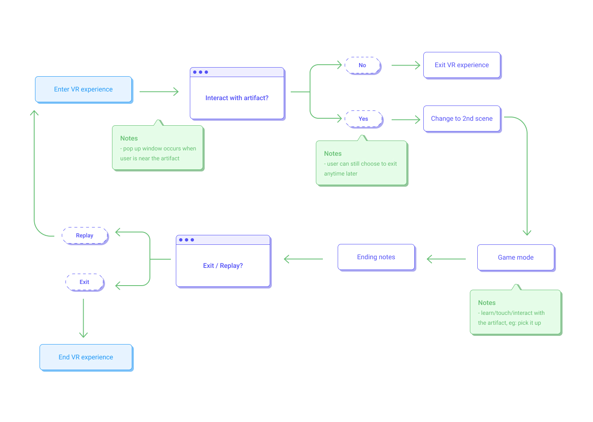
User Flow
Deliverables
You can find the UI prototype in Figma, click here. And a short report, click here.
Prototype Showcase (Original video is in 60fps, however the only one I found can be uploaded is broken :( )
Future Work
Iterate future versions till completing our design solution. Constantly communicate with customers, collecting valuable feedback for improvement. Polish aesthetics. Add more level contents, etc. In general, add more stuff!
Team Roles (Not Ranked by Contribution, everyone works the best for the team)
- Chongyang(Me): Team Leader, Unity Developer, Level/Game Designer, Researcher, Artist
- Jenny: UI/UX Designer, Product Researcher
- Ivy: UI/UX Designer, UI artist, Learning Specialist
- Qi: Learning Specialist, Researcher, Documentation, Video Editor
- Zoe: Learning Specialist, Researcher, Documentation, Video Editor
- Jenny: UI/UX Designer, Product Researcher
- Ivy: UI/UX Designer, UI artist, Learning Specialist
- Qi: Learning Specialist, Researcher, Documentation, Video Editor
- Zoe: Learning Specialist, Researcher, Documentation, Video Editor
My Major Contributions
- Raised the very first, original project idea.
- Developed prototypes in Unity iteratively, coded everything.
- Designed and developed Unity scene levels and artworks.
- Contributed creative game design ideas.
- Researched on related theories and existing products.
- Coordinated team collaboration, spliting tasks and goals for each iteration phase.
- Developed prototypes in Unity iteratively, coded everything.
- Designed and developed Unity scene levels and artworks.
- Contributed creative game design ideas.
- Researched on related theories and existing products.
- Coordinated team collaboration, spliting tasks and goals for each iteration phase.
Highlights
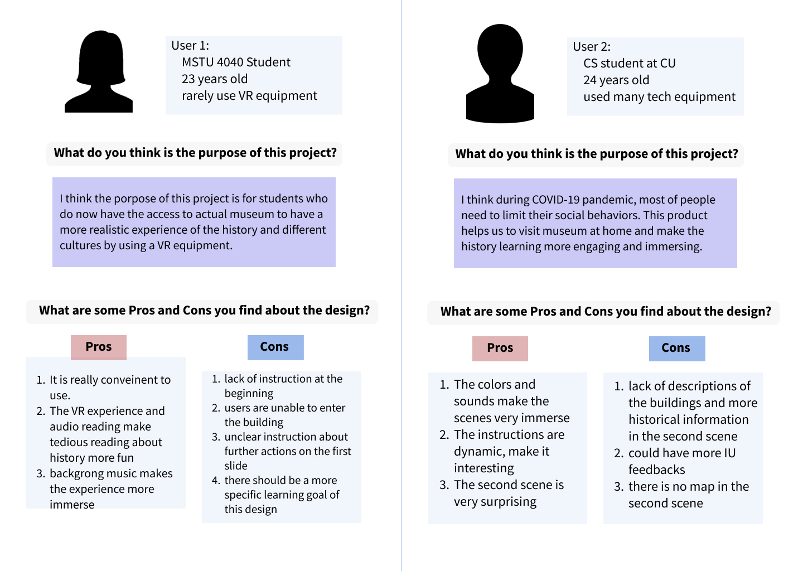
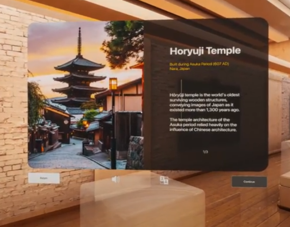
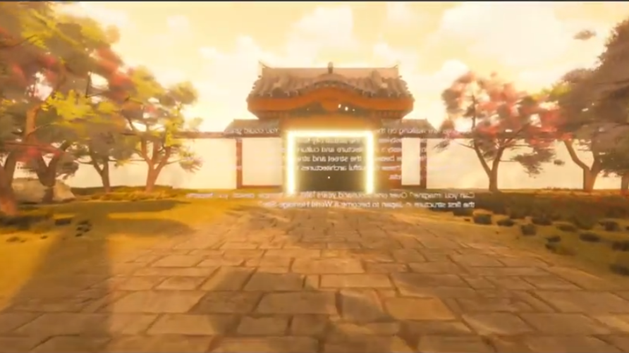
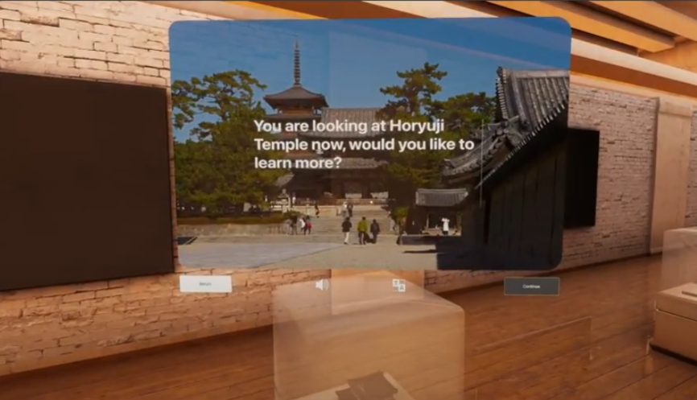
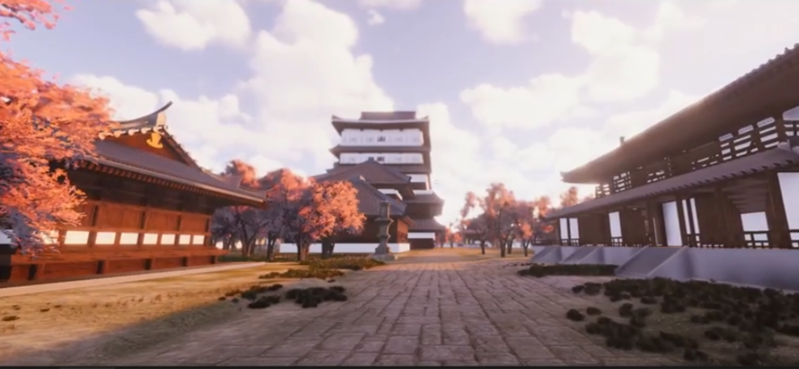
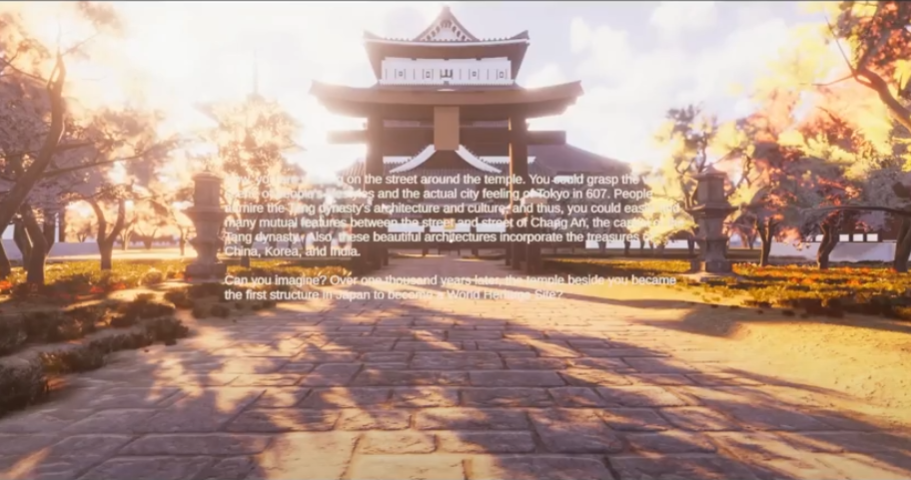
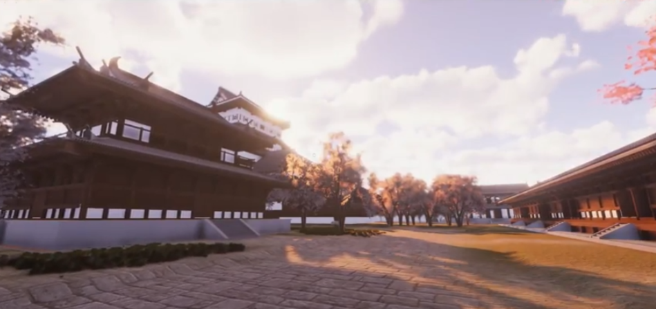
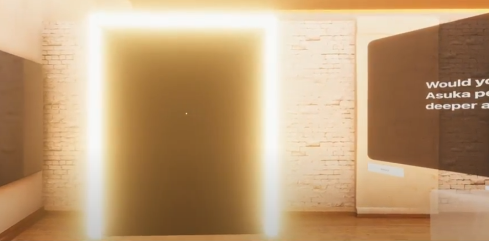
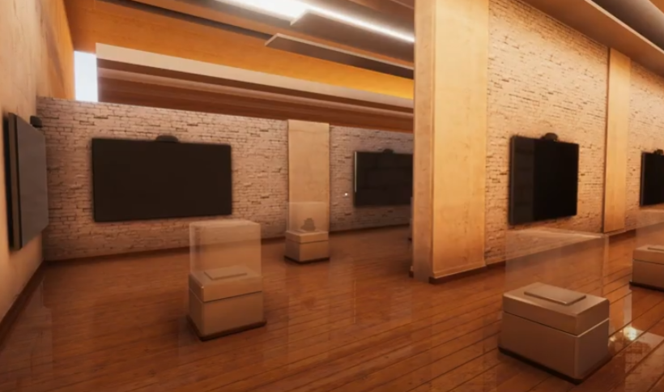
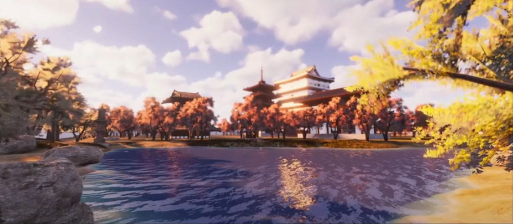
×